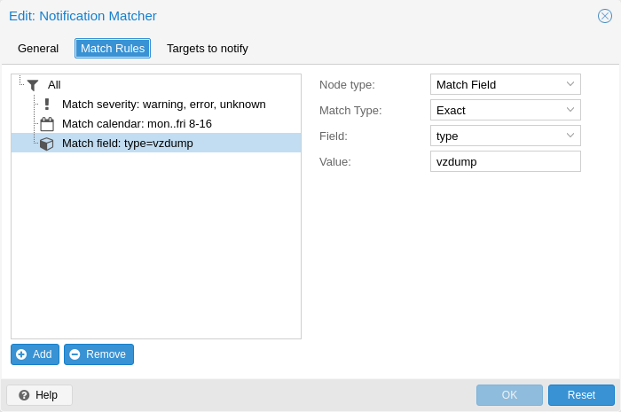

Notification matchers route notifications to notification targets based on their
matching rules. These rules can match certain properties of a notification, such
as the timestamp (match-calendar), the severity of the notification
(match-severity) or metadata fields (match-field).
If a notification is matched by a matcher, all targets configured for the
matcher will receive the notification.
An arbitrary number of matchers can be created, each with with their own matching rules and targets to notify. Every target is notified at most once for every notification, even if the target is used in multiple matchers.
A matcher without any matching rules is always true; the configured targets will always be notified.
matcher: always-matches
target admin
comment This matcher always matchestarget: Determine which target should be notified if the matcher matches.
can be used multiple times to notify multiple targets.
invert-match: Inverts the result of the whole matcher
mode: Determines how the individual match rules are evaluated to compute
the result for the whole matcher.
If set to all, all matching rules must match.
If set to any, at least one rule must match.
Defaults to all.
match-calendar: Match the notification’s timestamp against a schedule.
match-field: Match the notification’s metadata fields.
match-severity: Match the notification’s severity.
comment: Comment for this matcher.
A calendar matcher matches the time when a notification is sent against a configurable schedule.
match-calendar 8-12
match-calendar 8:00-15:30
match-calendar mon-fri 9:00-17:00
match-calendar sun,tue-wed,fri 9-17
Notifications have a selection of metadata fields that can be matched. When
using exact as a matching mode, a , can be used as a separator. The
matching rule then matches if the metadata field has any of the specified
values.
match-field exact:type=vzdump Only match notifications about backups.
match-field exact:type=replication,fencing Match replication and fencing notifications.
match-field regex:hostname=^.+\.example\.com$ Match the hostname of
the node.
If a matched metadata field does not exist, the notification will not be
matched.
For instance, a match-field regex:hostname=.* directive will only match
notifications that have an arbitrary hostname metadata field, but will
not match if the field does not exist.
A notification has a associated severity that can be matched.
match-severity error: Only match errors
match-severity warning,error: Match warnings and error
The following severities are in use:
info, notice, warning, error, unknown.
matcher: workday
match-calendar mon-fri 9-17
target admin
comment Notify admins during working hours
matcher: night-and-weekend
match-calendar mon-fri 9-17
invert-match true
target on-call-admins
comment Separate target for non-working hoursmatcher: backup-failures
match-field exact:type=vzdump
match-severity error
target backup-admins
comment Send notifications about backup failures to one group of admins
matcher: cluster-failures
match-field exact:type=replication,fencing
target cluster-admins
comment Send cluster-related notifications to other group of admins